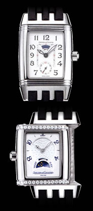

|
■2007/01/28/(Sun)19:19
本日は目の保養
|

デパートへ目の保養にいってまいりましたです。
超高級絨毯展（なんかちゃんとした名前が付いていたけど忘れた。…というか別にこれを見にきたわけではなく、デパート行ったらたまたまやってたのだけど）
一番高い絨毯は2,200万円の有名工房製のペルシャ絨毯でした。でもいつもこの手の絨毯を見ると思うのだけど、どんなに高い絨毯でも安いプラスティックの画鋲で上部を止めて展示してるんだよね。マンション同等価格のものをぶら下げるものが画鋲だなんて…いいのかしらん〜？
トルコで絨毯力(?)を手に入れたので、こーゆー展示会を見つけると、ブラッシュアップとして必ず覗いてるわけです。
目の細かい細かなデザイン、色も上品でいいなあと思うとやっぱりとんでもない価格。絨毯をひっくり返して両面の美しさと上下から見ての違いなんかをチェック。
トルコに行ってはじめて知った絨毯の見方。
そのあとは時計を見に。
欲しいなーと思っている時計がモデルチェンジで廃盤となってしまったため、中古も扱っている店に「入荷したら教えてー！」と言っていたら「違うモデルですけどおすすめですー」と連絡があったのでした。
50m防水。パワーリザーブ、ナイト＆デイ機能。なかなか綺麗な時計だし面白い時計かも。ココでも女性が1本持つならオススメ！とあるし。もうちょっと調査＆悩みます。。。（…で売り切れると…）
|
| |